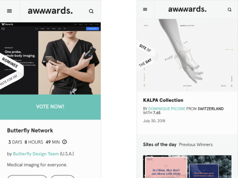
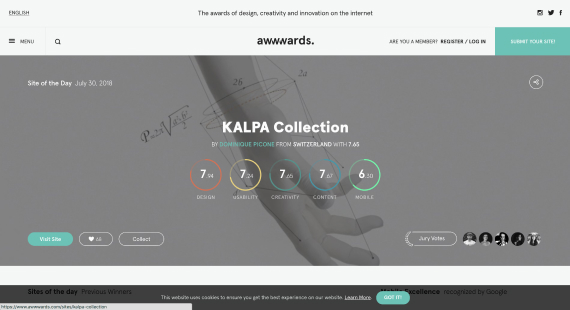

Works
Look at my some works.
MY WORKS
Awwwards.
JVEB Studio, basé à Nantes, est spécialisé dans la création de contenu courts (gif, stopmotion) pour les plus grandes marques et agences de pub, mais aussi pour le fun ! Le studio cultive son esprit DIY et homemade pour des vidéos uniques et impactantes…


JVEB Studio, basé à Nantes, est spécialisé dans la création de contenu courts (gif, stopmotion) pour les plus grandes marques et agences de pub, mais aussi pour le fun ! Le studio cultive son esprit DIY et homemade pour des vidéos uniques et impactantes…
Awwwards.
JVEB Studio, basé à Nantes, est spécialisé dans la création de contenu courts (gif, stopmotion) pour les plus grandes marques et agences de pub, mais aussi pour le fun ! Le studio cultive son esprit DIY et homemade pour des vidéos uniques et impactantes…
JVEB Studio, basé à Nantes, est spécialisé dans la création de contenu courts (gif, stopmotion) pour les plus grandes marques et agences de pub, mais aussi pour le fun ! Le studio cultive son esprit DIY et homemade pour des vidéos uniques et impactantes…
PORTFOLIO